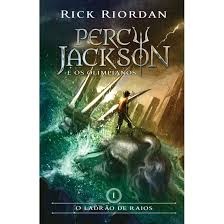
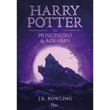
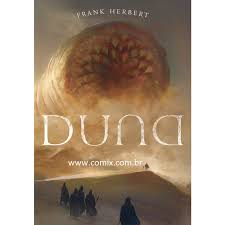

livros
tipos
romance
Saga Percy jackson
Mais de 50 milhões de cópias dos livros já foram vendidas em mais de trinta e cinco países. A série de livros é também considerada uma das mais vendidas da história.
Primeiro livro foi lançado 2005
Escrito por Rick Riordan
Saga Harry Potter
A série também recebeu algumas críticas, incluindo a preocupação com o tom cada vez mais sombrio conforme a história progredia. Até maio de 2015, já haviam sido vendidas 450 milhões de cópias em todo o mundo, tornando a série a best-seller da história, sendo traduzida para 73 idiomas.Os últimos quatro livros consecutivamente foram considerados os mais vendidos da história, sendo que o último livro vendeu cerca de 11 milhões de cópias nos Estados Unidos nas primeiras 24 horas após o seu lançamento.
Primeiro livro foi lançado 1997
Escrito por J. K. Rowling
Suspense
Saga Duna
Duna (no original em inglês Dune) é um romance de ficção científica do escritor americano Frank Herbert (1920-1986), publicado originalmente pela editora Chilton Books nos Estados Unidos em 1965. Vencedor do prêmio Hugo de 1966, Duna é considerado o livro de ficção científica mais vendido de todos os tempos.
Primeiro livro foi lançado 1965
Escrito por Frank Herbert
Autoajuda
Livro é voltado para a arte de se relacionar com as pessoas, técnicas simples, porém, de extrema eficácia nos relacionamentos interpessoais. Com experiências vivenciadas pelo próprio autor e outras ocorridas em sua época por ilustres pessoas a sua volta, como Winston Churchill, John D. Rockefeller, Eleanor Roosevelt, Daniel W. Josselyn, General George C. Marshall, Henry Ford e Abraham Lincoln. Dale Carnegie, em linguagem simples, ensina a arte nos relacionamentos.
Primeiro edição foi lançado 1965
Escrito por Dale Carnegie